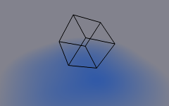
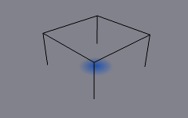
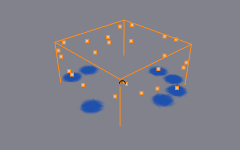
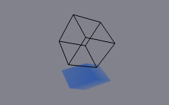

笔刷¶
Reference
- Panel
- Type
笔刷
The Brush type makes object apply paint on the canvas.
Brush main panel.¶
From the first brush panel you can define how brush affects canvas color surfaces.
- Absolute Alpha
This setting limits brush alpha influence. Without it, brush is "added" on surface over and over again each frame, increasing alpha and therefore influence of brush on canvas. In many cases however, it is preferred to not increase brush alpha if it already is on brushes level.
- Erase Paint
Makes brush dissolve existing paint instead of adding it.
- Wetness
Defines how "wet" new paint is. Wetness is visible on "Paint" surface "wetmap". Speed of "Drip" and "Spread" effects also depends on how wet the paint is.
- Use Object Material
When enabled, you can define a material to be used as brush color. This includes material's base color and all textures linked to it, eventually matching the rendered diffuse color. This setting is only available when using "Blender Internal" renderer at the moment.
Otherwise you can define a color for the brush from the color box below.
- Alpha
Defines brush alpha or visibility. Final wetness is also affected by alpha.
Source¶
Reference
- Type
笔刷
- Panel
Paint source panel.¶
Paint Source¶
Paint Source setting lets you define how brush influence/intersection is defined.
- Mesh Volume
The Brush affects all surface point inside the mesh volume.

Source: Mesh Volume.¶
- Proximity
Only uses defined distance to the closest point on brush mesh surface. Note that inside of the volume is not necessarily affected because it is not close to the surface.
Source: Proximity. Brush affects all canvas pixels around it.¶
- Mesh Volume + Proximity
Same as volume type, but also has influence over defined distance.
- Inner Proximity
Applies proximity inside the mesh volume.
- Negate Volume
Negates brush alpha within mesh volume.

The Volume + Proximity brush with no additional settings.¶

Inner Proximity. Proximity falloff is now visible inside the volume.¶

Negate Volume. Inner side of the volume has become completely transparent.¶

Inner Proximity and Negate Volume enabled together.¶
- Object Center
Instead of calculating proximity to the brush object mesh, which can be quite slow in some cases, only distance to only center is calculated. This is much faster and often good enough.
Source: Object Center.¶
- Particle System
Brush influence is defined by particles from a selected particle system.
- Particle Effect: Solid Radius
ToDo 2.62.
- Use Particle Radius
- Smooth Radius
ToDo 2.62.
Source: Particle System.¶
Common Options¶
- Paint Distance
ToDo 2.62.
- Project
Projects brush to the canvas from a defined direction. Basically this can be considered as "direction aligned" proximity.
The Project option enabled. See how brush only affects canvas in normal direction.¶
- Falloff
Falloff type can be "Smooth", "Sharp" or tweaked with a color ramp.
Velocity¶
Reference
- Type
笔刷
- Panel

Velocity panel.¶
This panel shows brush options that are based on object velocity.
On top you have a color ramp and several related settings. Basically the color ramp represents brush velocity values: left side being zero velocity and right side being the "Max velocity". Speed is measured in "Blender units per frame".
Checkboxes above can be used to define color ramp influence.
- Multiply Alpha
Uses color ramp's alpha value depending on current velocity and multiplies brush alpha with it.
- Replace Color
Replaces the brush color with the values from the 颜色渐变部件.
- Multiply Depth
Multiplies brushes "depth intersection" effect. Basically you can adjust displace and wave strength depending on brush speed.
- Do Smudge
Enabling Smudge makes the brush "smudge" (or "smear") existing colors on the surface as it moves. The strength of this effect can be defined from the Smudge Strength property.
Even when smudge is enabled brush still does its normal paint effect. If you want a purely smudging brush use zero alpha. It is also possible to have Erase option enabled together with smudge.
Waves¶
Reference
- Type
笔刷
- Panel

Brush Waves panel.¶
This panel is used to adjust brush influence to "Wave" surfaces.
- Wave Type
Select what effect the brush creates in the wave simulation.
- Depth Change
This option makes brush create waves when the intersection depth with the surface is changed on that point. If the brush remains still, it will not have influence.
Using a negative "Factor" with this type can create a nice looking "wake" for moving objects like ships.
- Obstacle
Constantly affects surface whenever intersecting. Waves are also reflected off this brush type. However, due the nature of wave simulation algorithm this type creates an unnatural "dent" in the surface if brush remains still.
- Force
Directly affects the velocity of wave motion. Therefore the effect is not one-to-one with brush intersection depth, yet the force strength depends on it.
- Reflect Only
This type has no visible effect on the surface alone but reflects waves that are already on the surface.
- Factor
Adjusts how strongly brush "depth" affects the simulation. You can also use negative values to make brush pull water up instead of down.
- Clamp Waves
In some cases the brush goes very deep inside the surface messing whole simulation up. You can use this setting to "limit" influence to only certain depth.